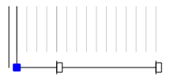
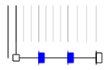
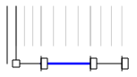

对象选择
- 可选择的对象包括：
- “挤出轴”控件
- 起点（左下角）及其右侧的所有点
- 各条边
单击“挤出轴”控件将其选中。

图 1：已选中的“挤出轴”控件
起点不能与其他任何对象一起选中。

图 2：已选中的起点
起点右侧的点可以多选：按住 Control 键单击多个点，或在某个点被选为种子（seed）选择之后，围绕多个点拖动选择矩形。

图 3：选中的点以深蓝色绘制
边一次只能选择一条。

图 4：选中的边以深蓝色绘制
鼠标右键与选择
在选择模式（ ）下，鼠标左键用于选择和移动对象，但当其他鼠标模式处于激活状态时（
）下，鼠标左键用于选择和移动对象，但当其他鼠标模式处于激活状态时（ 、
、 、
、 ），选择/移动功能会从左键转移到右键。这样您就可以在使用某个工具的同时进行位置或属性调整，而不必切换回选择工具。
），选择/移动功能会从左键转移到右键。这样您就可以在使用某个工具的同时进行位置或属性调整，而不必切换回选择工具。
| 这些内容对您有帮助吗？… 版权与免责声明 | FLAC3D © 2019, Itasca | 原文更新于 2020 年 10 月 8 日 |